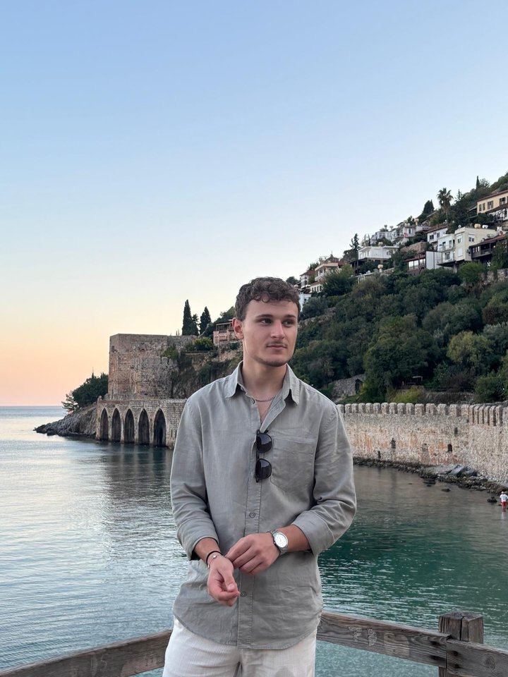

Hakkımda

Özgeçmiş
Ben Emin Yıldırım, Bursa'da büyüdüm ve şu anda Akdeniz Üniversitesi Bilgisayar Programcılığı 2. sınıf öğrencisiyim. Bir kız, bir erkek kardeşim var ve kardeşlerin en büyüğüyüm. Üniversite için Antalya'ya taşındım.
Bilgisayara duyduğum ilgi yüzünden bu bölümü seçtim. Bölümü bitirince DGS ile mühendisliğe geçmek istiyorum ve bunun için çalışıyorum.
Görsel tasarım ve dijital medya üretim süreçlerine duyduğum ilgiyle kullanıcı odaklı arayüzler, hareketli grafikler ve video kurgu projeleri üretiyorum. Amacım, teknik altyapımı yaratıcı tasarım ilkeleriyle birleştirerek kalıcı işler ortaya koymak.
Kendimi meraklı, disiplinli, sosyal, enerjik ve yardım sever biri olarak tanımlıyorum. Hayattaki amacım yeni şeyler öğrenmek, kişisel ve mesleki olarak gelişmek ve iyi bir insan olmak.
Eğitim
- Akdeniz ÜniversitesiBilgisayar Programcılığı, 2. sınıf (devam ediyor)
- Bursa Anadolu LisesiLise
- Atatürk İlkokuluİlkokul
Yetenekler
İlgi alanları
Bu hobiler stres atmama, rahatlamama ve vücudumu geliştirmeme yardımcı oluyor.